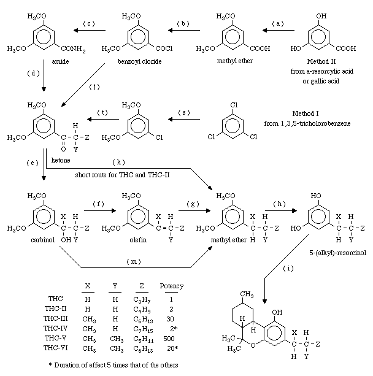
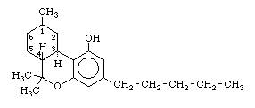
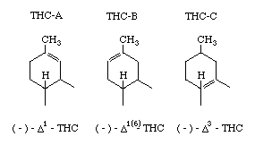

THC Synthesis - Overview
(Written in 1968 and 1969)
(Minor embellishments by Damian, 1999)
(The assumption was made that all temperatures are in degrees Centigrade/Celslus)

Tetrahydrocannabinol
Under the term tetrahydrocannabinol (THC) we will consider the three known physiologically active isomers, which differ only in the bonding in the left-hand ring of the molecule;

The preferred numbering for the isomers is based on mono-terpenes although other systems are used and confuse the literature (Reference 355). The isomers have been designated here as follows;

So far as is known at the present time these isomers have very similar potency (weight-for-weight), but it is likely there may be differences in the experience produced analogous to the change when hashish is eaten instead of smoked. Isomers A & B are found in natural hashish while THC-C is a synthetic THC which has been extensively investigated in efforts to establish which portions of the molecule are essential to psychedelic activity (see Adams' papers). In general it has been shown that alterations of the molecule result in reduction of activity. However, by changing the alkyl group on the right-hand ring (above, n-amyl, composed of five carbon atoms in a straight chain) it has been possible to produce THC-C variants with enormously increased potency and duration of effect. The variant described here as THC-V is at least as potent as LSD (dose 100-millionths gram).
Preparation of five of the most interesting of the THC-C analogues differing in the alkyl side chain (designated THC-II, THC-III, THC-IV, THC-V, THC-VI) is described in this paper. Note that the corresponding alkyl-group variants in the THC-A and THC-B series can be prepared simply by modifying the final condensation reaction. These materials have not been reported in the literature, but there is reason to believe that they have at least equivalent activity.
THC-A's can be easily isomerized-to THC-B's by the method of Mechoulam and Gaoni (J.A.C.S. 90, page 2420, 1968), using p-toluene sulphonic acid in nearly quantitative yield.
The syntheses of THC-A, THC-B, or THC-C are all based on the condensation of olivetol (5-(n-amyl)-resorcinol) with a second component which forms the left-hand and center ring of the THC molecule. THC-A or THC-B are obtained from olivetol and one of the following; citral, (-)-verbenol, or (+)-p-2,8-menthadien-2-ol. THC-C is obtained from olivetol and (-)-2-carbethoxy-5-methylcyclohexane. The variants in each of the three series are obtained by replacing olivetol with a 5-(alkyl)-resorcinol in which the alkyl group is altered from n-amyl to one of the following;
THC: n-amyl
THC-II: n-hexyl
THC-III: 1'-methyl-octyl
THC-IV: 1'-methyl-nonyl
THC-V: 1',2'-dimethyl-heptyl
THC-VI: 1',2'-dimethyl-octyl
The example given here is for the preparation of 5-(1',2'-dimethyl-heptyl)-resorcinol, the olivetol analogue required for THC-V. When preparing THC itself, or the variant THC-II, the synthesis is somewhat shorter, due to the fact that the methyl-group side chain need not be added.
Although the three isomers described above have similar potency, other isomeric variations of the THC molecule reduce or eliminate psychedelic effect. The original THC and variants prepared by early workers were mixtures of these active and inactive isomers, while the present syntheses can be made to give mainly active materials. This increase has been taken into account in the following description of THC-variants and their properties.
THC
The THC containing an n-amyl side chain on the right-hand ring is identical to the active component of hashish or marihuana. It is active at approximately a dose of 1/1000 gram per kilogram of body weight. In method I it is prepared from 1-chloro-3,5-dimethoxybenzene and pentanonitrile by reaction (t), followed by direct reduction (k), and then demethylation (h) and finally condensation with one of the agents mentioned above in (i). In method II reactions (d) or (j) are carried out using 1-bromo-butane to produce the ketone, while subsequent reactions are the same.
THC-II
This variant is more than twice as active as THC itself (effective dose 1/2000 gm. per kilogram) and differs only in that the length of the alkyl side chain is extended by one carbon atom, giving the n-hexyl group. The synthesis is as for THC, except that in method I pentanonitrile is replaced by hexanonitrile, while in method II 1-bromo-butane is replaced by an equivalent amount of 1-bromo-pentane. Further lengthening of the side chain results in declining activity. (Reference 128)
THC-III
THC-III and the following variants differ from THC and THC-II in that the alkyl side chain has attached to it either 1 (THC-III and IV) or 2 (THC-V and VI) methyl groups as branches at the first or first two carbon atoms of the side chain. The preparation of THC-s III through VI requires the use of steps (e)(f) and (g) in which this side branch on the first carbon atom is attached to the ketone obtained by reactions (d)(j) or (t), in the same way as THC or THC-II. For THC-III by method I the 1-chloro-3,5-dimethoxybenzene is reacted with octanonitrile, while method II (d or j) requires the use of 1-bromo-heptane. THC-III is approximately 30 times more potent on a weight basis than THC, so that the effective dose is about 1/30,000 gm. per kilogram. (Reference 129)
THC-IV
This variant is prepared as THC-III, except that nonanonitrile or 1-bromo-octane are used so that the straight part of the alkyl side chain is one carbon atom longer. Although the chart shows a weight-for-weight potency twice that of THC, it is not possible to directly correlate the activity of either THC-IV or VI with the others because the duration of effect is at least five times as great. (Reference 129)
THC-V
This compound is the most potent of all the reported variants, and it is 500 times more active than THC (effective dose 1/500,000 gm. per kilogram). In this case the alkyl side chain (1',2'-dimethylheptyl) contains seven carbon atoms in a straight chain, with 2 methyl groups attached as branches to the first and second carbon atoms. The first methyl branch (shown as X on the chart) is attached as described for THC-III or IV in reactions (e)(f)(g). The second methyl group (Y) is not attached separately but is an original part of the 2-methylheptanonitrile used in method I, or the 2-bromo-heptane used in method II. (Reference 130)
THC-VI
This variant is prepared in the same way as THC-V, except that 2-methyl-octanonitrile or 2-bromo-octane are used. This gives an alkyl side chain one carbon atom longer than in THC-V, and like THC-IV, the duration of effect is at least five times that of the others. On a weight basis THC-VI is at least 20 times more powerful than THC (effective dose 1/20,000 gm. per kilogram). (Reference 187)
In addition to the above listed variants of THC, several others have been prepared for the Army chemical warfare services. It is not known what special properties they possess, but presumably they are particularly potent, and are perhaps even more potent than THC-V, which was the main object of the Army investigation. These variants are discussed in appendix Ten. It should be stressed that these materials have in most cases been tested on animals. Reports of the subjective effect in humans are not available.
Intermediate Ketone: Synthetic Method I